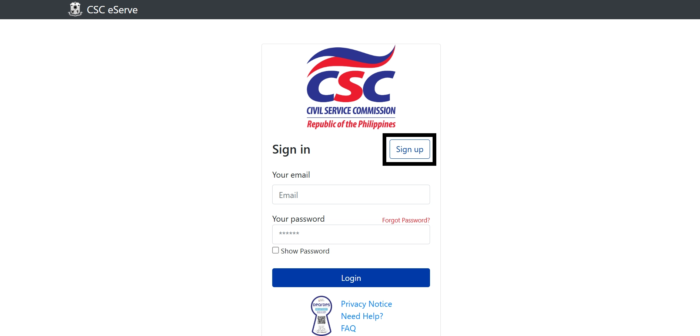
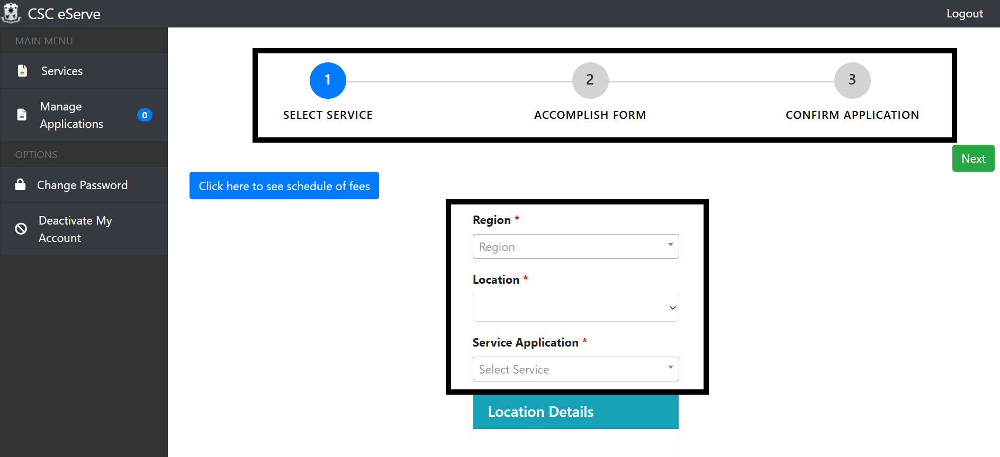
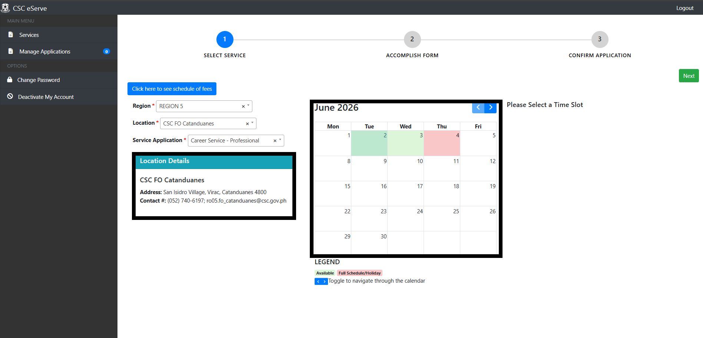
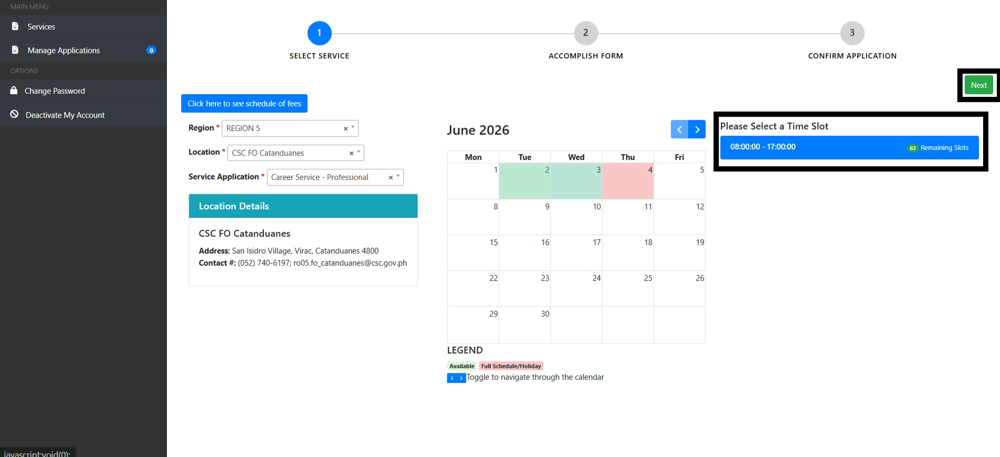
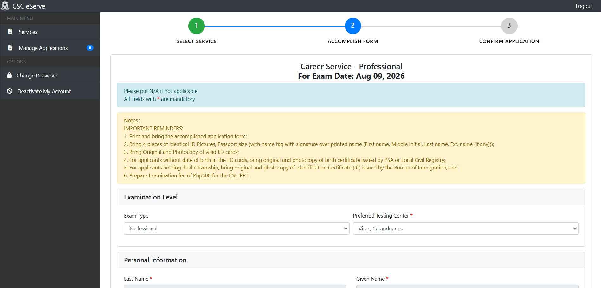
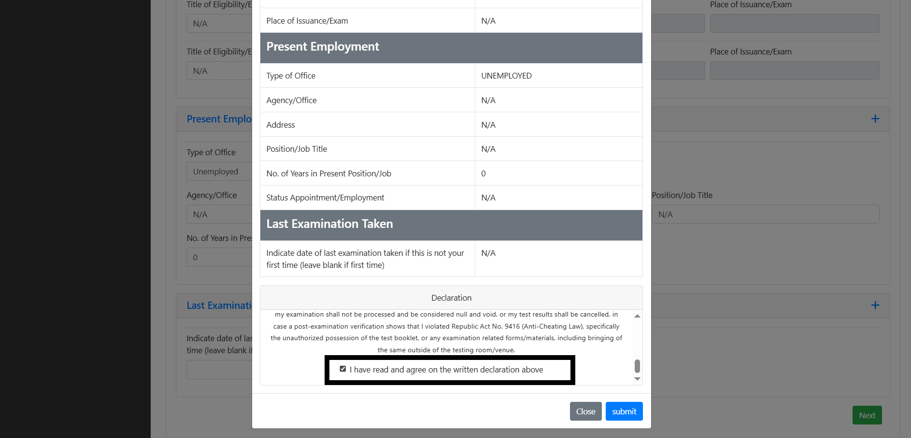
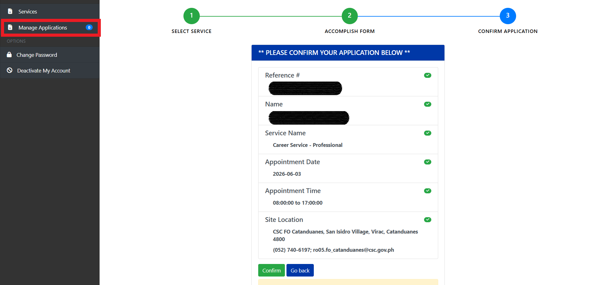
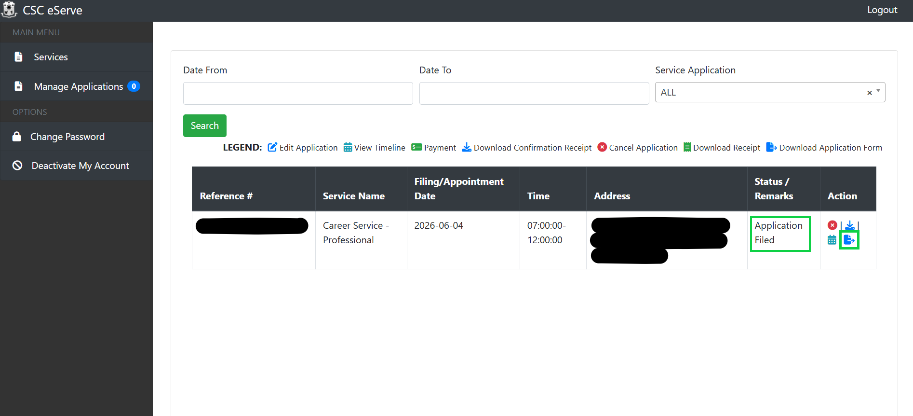

eServe Step-by-Step Guide
eServe link: https://services.csc.gov.ph/
1. First, kailangan mo gumawa ng account. Just click the “Sign Up” button.

2. And mari-redirect ka sa form na ‘to, need mo i-fill out. Make sure na correct po ang lahat ng ilalagay mong info at ang spelling. Pag tapos ka na mag fill-out, just click the “Register” button. Tandaan mo yung email at password na gagamitin mo. Then, may pop-up message na nagsasabing “Validate your account”. Just click the “OK” button.

3. After signing up, you’ll receive an email para sa pag-validate ng account mo. Just click the link and mari-redirect ka ulit sa sign-in/log-in page ng E-SERVE. You can now log in.

4. Once you are logged in, ito po yung we-welcome sayo. As you can see, may 3 steps: 1. SELECT SERVICE, 2. ACCOMPLISH FORM, and 3. CONFIRM APPLICATION. Ikaw ay nasa Step 1. Kailangan mo pong pumili ng Region, Location, at Service Application (Professional/Sub-Professional).

5. Once na nakapili ka na, lalabas na yung details sa baba tungkol sa location (if gamit mo po ay cellphone, just scroll down). Sa location na ‘yan mo ipapasa nang personal ang requirements. Then, may mag-a-appear din na calendar. Pumili ka ng date na gusto mo para sa schedule ng appointment mo, kung kailan mo gustong magpasa ng requirements. Please refer to the LEGEND below. If ang date po ay color light green (yung same sa "AVAILABLE"), it means na may available slots for that day. If red naman, it means na ubos na ang slots for that day. Any other color basically means na wala pong available slots. Color light green lang na date ang clickable.

6. Once na nakapili ka na ng date for your appointment, may mag-a-appear na time slots. Pumili ka lang po ng time na gusto mo para sa appointment mo and once na nakapili ka na, just click the “Next” button. If gamit mo ay cellphone, just scroll up. After that, mari-redirect ka na sa STEP 2: ACCOMPLISH FORM.

7. In STEP 2: ACCOMPLISH FORM, may mag-a-appear po na form. Just fill it out with the required information. If wala ka pong sagot sa isang field, just put 'N/A'. Once na tapos ka na mag-fill out, just click the “Next” button. Then mag a-appear lahat ng information na nilagay mo. Just scroll down and sa section na “Declaration”, i-click mo lang yung checkbox, then click the “Submit” button. And you’ll be redirected sa STEP 3: CONFIRM APPLICATION.


8. In STEP 3: CONFIRM APPLICATION, ito po yung mag-a-appear. Double-check mo lang lahat ng information, and if okay na po sa’yo, click the “Confirm” button. Para ma-check if you successfully submitted your application, just click the “Manage Applications” (or “Manage Appointments” pag naka phone).

9. In Manage Applications/Appointments, there should be a table. Sa Status/Remarks na column, dapat may “Application Filed” na nakalagay. This means na successfully naka-secure ka na ng slot at may appointment ka na. 🎉 Isa po sa mga requirements ay ang APPLICATION FORM. Just click the icon (yung naka-square), and automatically mada-download po ‘yan sa device mo. Also, may mari-receive ka rin na email (please refer to the 2nd image). And that’s it! May slot ka na, may appointment ka na. 🎉 Next na dapat mong gawin ay i-prepare na ang mga requirements.
